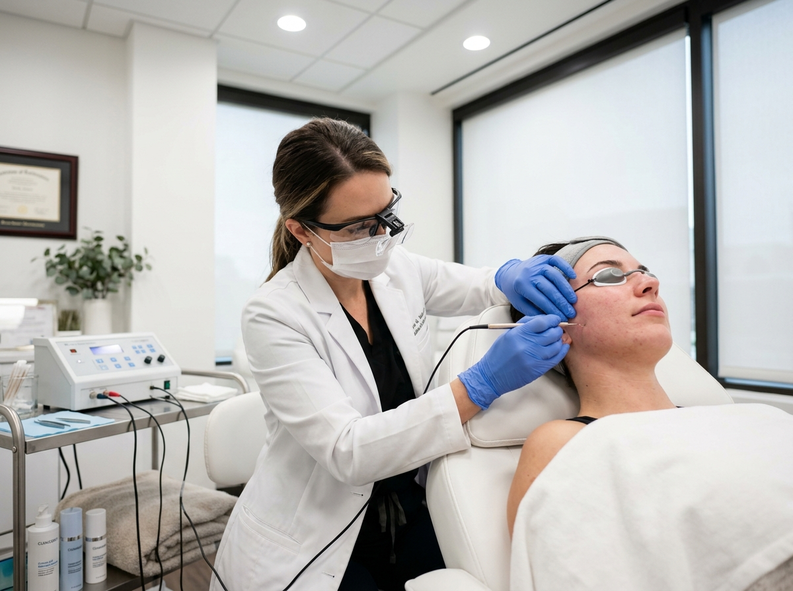
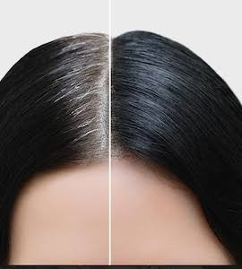
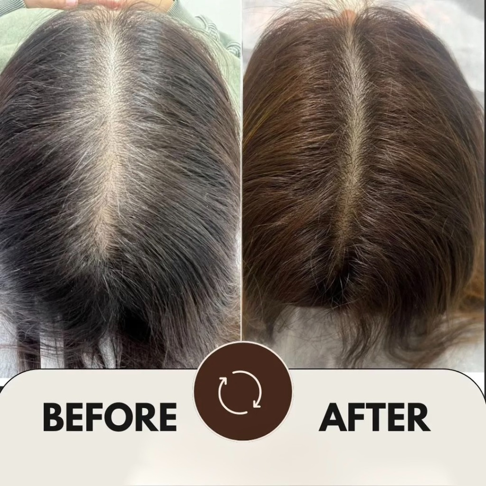

Clinical Medical Electrolysis for Permanent Hair Removal in Jaipur
Doctor-led follicle-by-follicle precision treatment delivering calibrated micro-current directly to the follicular germinal matrix. The only FDA-recognized method for permanent hair removal, clinically effective on laser-resistant white, grey, blonde, and fine hair across all skin types.
- FDA-Cleared for Permanent Removal
- Effective on White, Grey & Blonde Hair
- Safe for All Skin Tones (Fitzpatrick I–VI)
- Micro-Probe Precision Follicle Target

Conducted by certified medical epilators using stereomicroscopic precision and sterile single-use insulated micro-probes.
Medical Electrolysis Advantages
Engineered for patients where laser hair reduction reaches its biological limits.
FDA-Recognized Permanent Removal
The only method legally classified by the US FDA for permanent hair removal, halting regenerative germinal activity permanently.
Melanin-Independent Solution
Bypasses pigment entirely. Treats pure white, silver, grey, blonde, and fine vellus hair that lasers cannot absorb.
Targeted Follicular Destruction
Delivers energy directly into the follicular dermal papilla, sparing surrounding healthy dermis from thermal injury.
Three Clinical Modalities
Tailored treatment utilizing Galvanic, Thermolysis, or the Blend method based on follicle curvature, depth, and skin type.
Zero Paradoxical Regrowth
Eliminates the risk of paradoxical hypertrichosis (stimulated finer hair growth often triggered by laser on facial zones).
Safe for Sensitive Facial Zones
Ideal for delicate areas including upper lip, chin, eyebrows, hairline, sideburns, neck, chest, and scattered stubborn follicles.
Common Electrolysis Areas We Treat
Micro-precision targeting suitable for small delicate patches or scattered resistant follicles.
Facial Hair Removal
Permanent clearance for chin, jawline, upper lip, sideburns, and neck, including hormonal hirsutism and PCOS hair patterns.
Precision Brow & Hairline
Unibrow separation, eyebrow arch definition, and clean forehead hairline contouring where laser optical beams cannot be safely applied.
Post-Laser Residual Hair
The definitive finishing touch for stubborn white, grey, or fine hairs remaining after multiple laser hair reduction packages.
Body & Delicate Zones
Targeted clearance for underarms, bikini line, areola/breasts, abdomen, fingers, and toes with individual follicle precision.
Why Consider Medical Electrolysis?
Understanding why electrolysis remains the clinical gold standard for complete permanent hair clearance.
White & Grey Hair Solution
Laser hair removal requires melanin pigment to absorb optical energy. White and grey hairs possess zero melanin, making electrolysis the only proven medical option.
All Skin Tones & Pigments
Safe across the complete spectrum of Indian skin tones (Fitzpatrick IV–VI) without risk of surface hyperpigmentation, burns, or optical scattering.
Permanent Follicle Deactivation
Electrothermal and galvanic currents coagulate the germinative cells and follicular blood supply, preventing future hair formation permanently.
Precision Single-Hair Targeting
Treats isolated coarse stray hairs without heating or affecting surrounding delicate vellus hair, maintaining healthy skin integrity.
Hormonal & PCOS Support
Ideal for women dealing with hormonal hirsutism from PCOS, PCOD, or thyroid fluctuations who experience recurring facial hair.
Maintenance-Free Skin
Once a follicle cycle is fully treated in its active growth phase, no lifelong maintenance shaving, threading, or waxing is necessary.
Electrolysis Technology & Modalities
Three calibrated modalities deployed at Kezza Clinic based on hair thickness, root depth, and skin sensitivity.
Galvanic Electrolysis
Uses a continuous direct electrical current (DC) that reacts with moisture and sodium chloride in the follicle tissue to produce sodium hydroxide (lye), chemically destroying the germinative matrix.
- Mechanism: Chemical decomposition via lye formation
- Best for: Coarse, curved, or distorted follicle roots
- Speed: Slower action with profound chemical permanence
Thermolysis (Short-Wave)
Utilizes high-frequency alternating radiofrequency current (RF) to create rapid molecular vibration inside the follicle, generating localized electrocoagulation heat within milliseconds.
- Mechanism: High-frequency electrocoagulation heat
- Best for: Straight, fine, and medium facial hair follicles
- Speed: Ultra-fast clearance per session
The Blend Method
Simultaneously integrates Galvanic direct current with Thermolysis radiofrequency. The heat accelerates chemical lye activity, creating the highest follicle destruction rate with maximum patient comfort.
- Mechanism: Synergistic chemical + thermal destruction
- Best for: Stubborn hormonal hair & deep facial roots
- Speed: Optimal balance of speed and permanent efficacy
Medical Electrolysis vs. Other Methods
A clinical comparison of permanence, hair colour compatibility, and safety profile.
| Clinical Parameter | Medical Electrolysis | Laser Hair Reduction | Waxing & Threading |
|---|---|---|---|
| Permanence Level | Permanent (FDA Recognized) | Long-term reduction (melanin-dependent) | Temporary (regrowth in 2–4 weeks) |
| White, Grey & Blonde Hair | Proven Efficacy (All Colours) | Ineffective (zero melanin absorption) | Temporary pull only (regrows coarse) |
| Skin Tone Safety (Fitzpatrick I–VI) | Safe for All Skin Tones | Risk of burns/hyperpigmentation on deep skin | Risk of skin lifting and folliculitis |
| Treatment Precision | Follicle-by-Follicle Micro-Probe | Broad optical beam area coverage | Non-selective mechanical pulling |
| Follicle Germinal Matrix | Completely Coagulated | Temporarily miniaturized / weakened | Remains fully viable and undamaged |
| Paradoxical Stimulation Risk | No Growth Risk (Destroys Root) | Potential stimulation on fine facial hair | Can trigger increased blood supply to roots |
Step-by-Step Treatment Journey at Kezza Clinic
Our doctor-supervised 5-stage protocol ensures rigorous clinical hygiene and optimal patient comfort.
Clinical Evaluation
Trichoscopic assessment of hair thickness, root depth, growth phase, and skin sensitivity to customize modality settings.
Micro-Probe Insertion
An ultra-fine, sterile insulated probe is smoothly guided down the natural hair follicle canal without puncturing the skin.
Calibrated Impulse
A controlled pulse of electrothermal or blend current is delivered directly to the germinal matrix for a split second.
Frictionless Epilation
The treated hair is lifted out with sterile micro-forceps without any resistance or pulling sensation at the skin surface.
Derm-Calming Regimen
Application of cold compress, antibacterial soothing balm, and specialized post-epilation derm-care to minimize erythema.
Real Patient Results • Clinical Evidence
Documented clinical outcomes of patients treated with precision electrolysis at Kezza Clinic.

Facial Hair Removal (Chin & Jawline)
Permanent clearance of stubborn hormonal chin and sideburn hair in a female patient with PCOS history. Follicles deactivated with zero pigmentation changes on Indian skin.

Sensitive Zone & Follicle Clearance
Complete permanent removal of scattered laser-resistant follicles and chronic ingrown hair prone zones, restoring clear, bump-free skin texture.
Why Choose Kezza Clinic for Electrolysis?
Hospital-grade hygiene, certified clinical specialists, and stereomicroscopic precision in Jaipur.
Certified Medical Specialists
Treatment delivered by certified clinical epilation practitioners under dermatologist supervision with comprehensive anatomical expertise.
Stereomicroscopic Precision
High-magnification surgical loupes ensure perfect micro-probe alignment with the follicle angle, preventing skin trauma or pitting.
Single-Use Insulated Probes
Medical-grade, sterile, gold and stainless steel disposable probes with insulated shafts that protect surface epidermis from heat.
Hospital-Grade Sterilization
Strict Class-B autoclave sterilization, sterile barrier drapes, and single-use consumables for complete clinical safety.
What to Expect During Your Treatment Journey
Because hair follicles grow in cycles, complete permanent clearance is achieved across sequential visits.
Session 1: Initial Clearance & Test Assessment
Detailed consultation, skin type evaluation, and initial follicle clearance of active anagen hairs in the chosen zone. Mild transient redness subsides within hours.
Weeks 2–4: Second Cycle Targeting
Clearing emerging follicles that were dormant in telogen during your first visit and have now transitioned into an active growth stage.
Months 2–4: Visible Density Reduction
Substantial thinning across the treated area. Any hairs that emerge are significantly finer, softer, and sparser than original growth.
Months 6–9: Significant Permanent Clearance
Over 80% to 90% permanent reduction achieved. Session intervals stretch to several weeks apart for brief touch-up clearances.
Final Phase: Lasting Smooth Skin
Targeted follicles are permanently deactivated. Enjoy clear, smooth, hair-free skin without future shaving, plucking, or waxing.
Clinical Treatment FAQs
Clear, doctor-backed answers to your questions about medical electrolysis in Jaipur.
Is medical electrolysis truly permanent?
Why is electrolysis the only treatment that works on white and grey hair?
Does medical electrolysis hurt, and how is comfort managed?
How many sessions will I need for complete permanent removal?
Is electrolysis safe for Indian and darker skin tones?
Can I combine electrolysis with laser hair removal?
Begin Your Permanent Hair Removal Journey Today
Schedule a clinical consultation with our certified medical epilation team in Jaipur, Sikar, or Ajmer. Receive a comprehensive digital follicular assessment and customized treatment roadmap.
Book Clinical Consultation
Direct doctor callback within 15 minutes during clinic hours